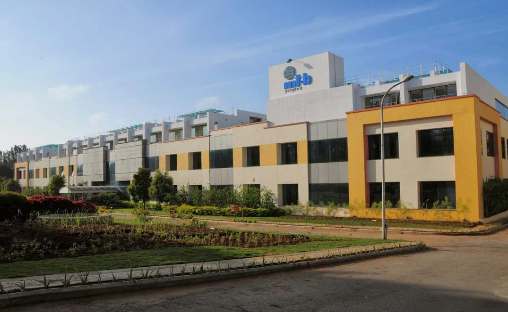

WebSciX 2026
20 Years of Web Science: Navigating the Era of Generative and Agentic AI
WebSciX India
WebSciX India is a satellite event of the ACM Web Science Conference, dedicated to advancing the interdisciplinary study of the Internet, World Wide Web (WWW), and Artificial Intelligence (AI) and their impact on human lives in India and surrounding regions. WebSciX builds upon the Web Science for Development (WS4D) series of events conducted in India since 2019.
Web Science integrates disciplines such as computer science, sociology, economics, and policy studies to explore the socio-technical dynamics of digital ecosystems.
With over 800 million Internet users as of 2025, India’s digital landscape is vast and rapidly evolving, presenting both opportunities and challenges including digital inclusion, misinformation, and privacy.
🌆 Bengaluru, Karnataka, India

Bengaluru, widely recognized as the Silicon Valley of India, has emerged as a global center for technology, research, and innovation. The city hosts multinational corporations, startups, and premier research institutions such as IISc, ISRO, and DRDO.
Its strong academic ecosystem and industry collaboration make it an ideal venue for interdisciplinary discussions in Web Science, AI, and digital systems.
Beyond technology, Bengaluru’s cultural richness, vibrant communities, and cosmopolitan environment offer a unique setting where tradition meets innovation.
📍 Conference Venue
IIIT Bangalore Campus
26/C Electronics City Phase 1, Hosur Road, Bengaluru, Karnataka 560100
🚍 Travelling within Bengaluru
From Airport:
Take KIAS-8 airport Volvo bus → Electronics City (Infosys last stop)
Time: 2–2.5 hrs | Fare: ₹330 (~$5)
From Majestic:
Take 356C Volvo bus → Electronics City
Time: 1–1.5 hrs | Fare: ₹80 (~$1.5)
From other areas:
Reach Majestic, then continue to Electronics City.
Other options:
Taxi (Uber/Ola): ₹500–₹1000

IIIT Bangalore Campus